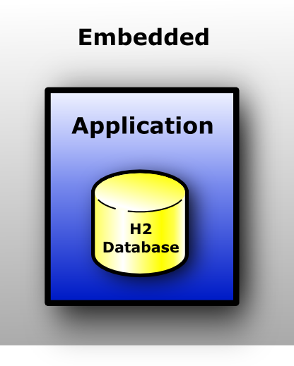
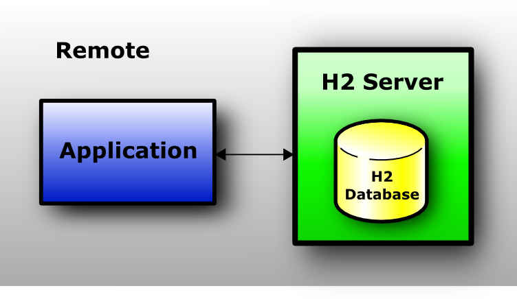
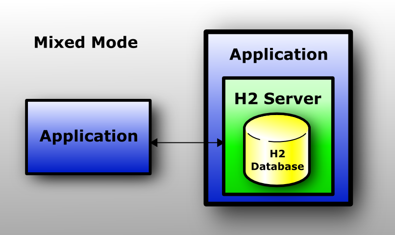

FeaturesFeature ListH2 in Use Connection Modes Database URL Overview Connecting to an Embedded (Local) Database In-Memory Databases Database Files Encryption Database File Locking Opening a Database Only if it Already Exists Closing a Database Ignore Unknown Settings Changing Other Settings when Opening a Connection Custom File Access Mode Multiple Connections Database File Layout Logging and Recovery Compatibility Auto-Reconnect Automatic Mixed Mode Page Size Using the Trace Options Using Other Logging APIs Read Only Databases Read Only Databases in Zip or Jar File Computed Columns / Function Based Index Multi-Dimensional Indexes User-Defined Functions and Stored Procedures Pluggable or User-Defined Tables Triggers Compacting a Database Cache Settings External Authentication (Experimental) Feature ListMain Features
Additional Features
SQL Support
Security Features
Other Features and Tools
H2 in UseFor a list of applications that work with or use H2, see: Links. Connection ModesThe following connection modes are supported:
Embedded ModeIn embedded mode, an application opens a database from within the same JVM using JDBC. This is the fastest and easiest connection mode. The disadvantage is that a database may only be open in one virtual machine (and class loader) at any time. As in all modes, both persistent and in-memory databases are supported. There is no limit on the number of database open concurrently, or on the number of open connections. Server ModeWhen using the server mode (sometimes called remote mode or client/server mode), an application opens a database remotely using the JDBC or ODBC API. A server needs to be started within the same or another virtual machine, or on another computer. Many applications can connect to the same database at the same time, by connecting to this server. Internally, the server process opens the database(s) in embedded mode. The server mode is slower than the embedded mode, because all data is transferred over TCP/IP. As in all modes, both persistent and in-memory databases are supported. There is no limit on the number of database open concurrently per server, or on the number of open connections. Mixed ModeThe mixed mode is a combination of the embedded and the server mode. The first application that connects to a database does that in embedded mode, but also starts a server so that other applications (running in different processes or virtual machines) can concurrently access the same data. The local connections are as fast as if the database is used in just the embedded mode, while the remote connections are a bit slower. The server can be started and stopped from within the application (using the server API), or automatically (automatic mixed mode). When using the automatic mixed mode, all clients that want to connect to the database (no matter if it's an local or remote connection) can do so using the exact same database URL. Database URL OverviewThis database supports multiple connection modes and connection settings. This is achieved using different database URLs. Settings in the URLs are not case sensitive.
Connecting to an Embedded (Local) Database
The database URL for connecting to a local database is
In-Memory DatabasesFor certain use cases (for example: rapid prototyping, testing, high performance operations, read-only databases), it may not be required to persist data, or persist changes to the data. This database supports the in-memory mode, where the data is not persisted.
In some cases, only one connection to a in-memory database is required.
This means the database to be opened is private. In this case, the database URL is
Sometimes multiple connections to the same in-memory database are required.
In this case, the database URL must include a name. Example:
To access an in-memory database from another process or from another computer,
you need to start a TCP server in the same process as the in-memory database was created.
The other processes then need to access the database over TCP/IP or TLS,
using a database URL such as:
By default, closing the last connection to a database closes the database.
For an in-memory database, this means the content is lost.
To keep the database open, add Database Files EncryptionThe database files can be encrypted. Three encryption algorithms are supported:
To use file encryption, you need to specify the encryption algorithm (the 'cipher') and the file password (in addition to the user password) when connecting to the database. Creating a New Database with File EncryptionBy default, a new database is automatically created if it does not exist yet when the embedded url is used. To create an encrypted database, connect to it as it would already exist locally using the embedded URL. Connecting to an Encrypted DatabaseThe encryption algorithm is set in the database URL, and the file password is specified in the password field, before the user password. A single space separates the file password and the user password; the file password itself may not contain spaces. File passwords and user passwords are case sensitive. Here is an example to connect to a password-encrypted database:
String url = "jdbc:h2:~/test;CIPHER=AES";
String user = "sa";
String pwds = "filepwd userpwd";
conn = DriverManager.
getConnection(url, user, pwds);
Encrypting or Decrypting a Database
To encrypt an existing database, use the java -cp h2*.jar org.h2.tools.ChangeFileEncryption -dir ~ -db test -cipher AES -encrypt filepwd Database File LockingWhenever a database is opened, a lock file is created to signal other processes that the database is in use. If database is closed, or if the process that opened the database terminates, this lock file is deleted. The following file locking methods are implemented:
To open the database with a different file locking method, use the parameter
String url = "jdbc:h2:~/test;FILE_LOCK=SOCKET"; For more information about the algorithms, see Advanced / File Locking Protocols. Opening a Database Only if it Already Exists
By default, when an application calls String url = "jdbc:h2:/data/sample;IFEXISTS=TRUE"; Closing a DatabaseDelayed Database Closing
Usually, a database is closed when the last connection to it is closed. In some situations
this slows down the application, for example when it is not possible to keep at least one connection open.
The automatic closing of a database can be delayed or disabled with the SQL statement
SET DB_CLOSE_DELAY 10
The value -1 means the database is not closed automatically.
The value 0 is the default and means the database is closed when the last connection is closed.
This setting is persistent and can be set by an administrator only.
It is possible to set the value in the database URL: Don't Close a Database when the VM ExitsBy default, a database is closed when the last connection is closed. However, if it is never closed, the database is closed when the virtual machine exits normally, using a shutdown hook. In some situations, the database should not be closed in this case, for example because the database is still used at virtual machine shutdown (to store the shutdown process in the database for example). For those cases, the automatic closing of the database can be disabled in the database URL. The first connection (the one that is opening the database) needs to set the option in the database URL (it is not possible to change the setting afterwards). The database URL to disable database closing on exit is: String url = "jdbc:h2:~/test;DB_CLOSE_ON_EXIT=FALSE"; Execute SQL on ConnectionSometimes, particularly for in-memory databases, it is useful to be able to execute DDL or DML commands automatically when a client connects to a database. This functionality is enabled via the INIT property. Note that multiple commands may be passed to INIT, but the semicolon delimiter must be escaped, as in the example below. String url = "jdbc:h2:mem:test;INIT=runscript from '~/create.sql'\\;runscript from '~/init.sql'"; Please note the double backslash is only required in a Java or properties file. In a GUI, or in an XML file, only one backslash is required: <property name="url" value= "jdbc:h2:mem:test;INIT=create schema if not exists test\;runscript from '~/sql/init.sql'" /> Backslashes within the init script (for example within a runscript statement, to specify the folder names in Windows) need to be escaped as well (using a second backslash). It might be simpler to avoid backslashes in folder names for this reason; use forward slashes instead. Ignore Unknown Settings
Some applications (for example OpenOffice.org Base) pass some additional parameters
when connecting to the database. Why those parameters are passed is unknown.
The parameters Changing Other Settings when Opening a Connection
In addition to the settings already described,
other database settings can be passed in the database URL.
Adding Custom File Access Mode
Usually, the database opens the database file with the access mode
String url = "jdbc:h2:~/test;ACCESS_MODE_DATA=rws";
For more information see Durability Problems.
On many operating systems the access mode Multiple ConnectionsOpening Multiple Databases at the Same TimeAn application can open multiple databases at the same time, including multiple connections to the same database. The number of open database is only limited by the memory available. Multiple Connections to the Same Database: Client/ServerIf you want to access the same database at the same time from different processes or computers, you need to use the client / server mode. In this case, one process acts as the server, and the other processes (that could reside on other computers as well) connect to the server via TCP/IP (or TLS over TCP/IP for improved security). Multithreading SupportThis database is multithreading-safe. If an application is multi-threaded, it does not need to worry about synchronizing access to the database. An application should normally use one connection per thread. This database synchronizes access to the same connection, but other databases may not do this. To get higher concurrency, you need to use multiple connections.
An application can use multiple threads that access the same database at the same time.
With default MVStore engine threads that use different connections can use the database concurrently.
With PageStore engine requests to the same database are synchronized,
that means that if one thread executes a long running query, the other threads need to wait.
Concurrent database usage may be enabled for PageStore or disabled for MVStore
with Locking, Lock-Timeout, DeadlocksPlease note MVCC is enabled in version 1.4.x by default, when using the MVStore. In this case, table level locking is not used. If multi-version concurrency is not used, the database uses table level locks to give each connection a consistent state of the data. There are two kinds of locks: read locks (shared locks) and write locks (exclusive locks). All locks are released when the transaction commits or rolls back. When using the default transaction isolation level 'read committed', read locks are already released after each statement. If a connection wants to reads from a table, and there is no write lock on the table, then a read lock is added to the table. If there is a write lock, then this connection waits for the other connection to release the lock. If a connection cannot get a lock for a specified time, then a lock timeout exception is thrown.
Usually,
The number of seconds until a lock timeout exception is thrown can be
set separately for each connection using the SQL command
Avoiding Deadlocks
To avoid deadlocks, ensure that all transactions lock the tables in the same order
(for example in alphabetical order), and avoid upgrading read locks to write locks.
Both can be achieved using explicitly locking tables using Note that delete, insert and update operations issue table level locks with PageStore engine, but does not issue them with default MVStore engine. Database File LayoutThe following files are created for persistent databases:
Moving and Renaming Database FilesDatabase name and location are not stored inside the database files. While a database is closed, the files can be moved to another directory, and they can be renamed as well (as long as all files of the same database start with the same name and the respective extensions are unchanged). As there is no platform specific data in the files, they can be moved to other operating systems without problems. BackupWhen the database is closed, it is possible to backup the database files.
To backup data while the database is running,
the SQL commands Logging and RecoveryWhenever data is modified in the database and those changes are committed, the changes are written to the transaction log (except for in-memory objects). The changes to the main data area itself are usually written later on, to optimize disk access. If there is a power failure, the main data area is not up-to-date, but because the changes are in the transaction log, the next time the database is opened, the changes are re-applied automatically. CompatibilityAll database engines behave a little bit different. Where possible, H2 supports the ANSI SQL standard, and tries to be compatible to other databases. There are still a few differences however:
In MySQL text columns are case insensitive by default, while in H2 they are case sensitive. However
H2 supports case insensitive columns as well. To create the tables with case insensitive texts, append
Compatibility ModesFor certain features, this database can emulate the behavior of specific databases. However, only a small subset of the differences between databases are implemented in this way. Here is the list of currently supported modes and the differences to the regular mode: DB2 Compatibility Mode
To use the IBM DB2 mode, use the database URL
Derby Compatibility Mode
To use the Apache Derby mode, use the database URL
HSQLDB Compatibility Mode
To use the HSQLDB mode, use the database URL
MS SQL Server Compatibility Mode
To use the MS SQL Server mode, use the database URL
MySQL Compatibility Mode
To use the MySQL mode, use the database URL
Text comparison in MySQL is case insensitive by default, while in H2 it is case sensitive (as in most other databases).
H2 does support case insensitive text comparison, but it needs to be set separately,
using Oracle Compatibility Mode
To use the Oracle mode, use the database URL
PostgreSQL Compatibility Mode
To use the PostgreSQL mode, use the database URL
Ignite Compatibility Mode
To use the Ignite mode, use the database URL
Auto-Reconnect
The auto-reconnect feature causes the JDBC driver to reconnect to
the database if the connection is lost. The automatic re-connect only
occurs when auto-commit is enabled; if auto-commit is disabled, an exception is thrown.
To enable this mode, append
Re-connecting will open a new session. After an automatic re-connect,
variables and local temporary tables definitions (excluding data) are re-created.
The contents of the system table
If another connection uses the database in exclusive mode (enabled using Automatic Mixed Mode
Multiple processes can access the same database without having to start the server manually.
To do that, append jdbc:h2:/data/test;AUTO_SERVER=TRUE
Use the same URL for all connections to this database. Internally, when using this mode,
the first connection to the database is made in embedded mode, and additionally a server
is started internally (as a daemon thread). If the database is already open in another process,
the server mode is used automatically. The IP address and port of the server are stored in the file
The application that opens the first connection to the database uses the embedded mode,
which is faster than the server mode. Therefore the main application should open
the database first if possible. The first connection automatically starts a server on a random port.
This server allows remote connections, however only to this database (to ensure that,
the client reads
All processes need to have access to the database files.
If the first connection is closed (the connection that started the server), open transactions of other connections will be rolled back
(this may not be a problem if you don't disable autocommit).
Explicit client/server connections (using Here is an example how to use this mode. Application 1 and 2 are not necessarily started on the same computer, but they need to have access to the database files. Application 1 and 2 are typically two different processes (however they could run within the same process).
// Application 1:
DriverManager.getConnection("jdbc:h2:/data/test;AUTO_SERVER=TRUE");
// Application 2:
DriverManager.getConnection("jdbc:h2:/data/test;AUTO_SERVER=TRUE");
When using this feature, by default the server uses any free TCP port.
The port can be set manually using Page Size
The page size for new databases is 2 KB (2048), unless the page size is set
explicitly in the database URL using Using the Trace OptionsTo find problems in an application, it is sometimes good to see what database operations where executed. This database offers the following trace features:
Trace Options
The simplest way to enable the trace option is setting it in the database URL.
There are two settings, one for jdbc:h2:~/test;TRACE_LEVEL_FILE=3;TRACE_LEVEL_SYSTEM_OUT=3
The trace level can be changed at runtime by executing the SQL command
SET TRACE_LEVEL_SYSTEM_OUT 3 Setting the Maximum Size of the Trace File
When using a high trace level, the trace file can get very big quickly.
The default size limit is 16 MB, if the trace file exceeds this limit, it is renamed to
SET TRACE_MAX_FILE_SIZE 1 Java Code Generation
When setting the trace level to
...
12-20 20:58:09 jdbc[0]:
/**/dbMeta3.getURL();
12-20 20:58:09 jdbc[0]:
/**/dbMeta3.getTables(null, "", null, new String[]{"TABLE", "VIEW"});
...
To filter the Java source code, use the
java -cp h2*.jar org.h2.tools.ConvertTraceFile
-traceFile "~/test.trace.db" -javaClass "Test"
The generated file Using Other Logging APIs
By default, this database uses its own native 'trace' facility. This facility is called 'trace' and not
'log' within this database to avoid confusion with the transaction log. Trace messages can be
written to both file and SLF4J is a simple facade for various logging APIs and allows to plug in the desired implementation at deployment time. SLF4J supports implementations such as Logback, Log4j, Jakarta Commons Logging (JCL), Java logging, x4juli, and Simple Log. To enable SLF4J, set the file trace level to 4 in the database URL: jdbc:h2:~/test;TRACE_LEVEL_FILE=4
Changing the log mechanism is not possible after the database is open, that means
executing the SQL statement Read Only Databases
If the database files are read-only, then the database is read-only as well.
It is not possible to create new tables, add or modify data in this database.
Only
Using the Custom Access Mode Read Only Databases in Zip or Jar File
To create a read-only database in a zip file, first create a regular persistent database, and then create a backup.
The database must not have pending changes, that means you need to close all connections to the database first.
To speed up opening the read-only database and running queries, the database should be closed using When the zip file is created, you can open the database in the zip file using the following database URL: jdbc:h2:zip:~/data.zip!/test Databases in zip files are read-only. The performance for some queries will be slower than when using a regular database, because random access in zip files is not supported (only streaming). How much this affects the performance depends on the queries and the data. The database is not read in memory; therefore large databases are supported as well. The same indexes are used as when using a regular database. If the database is larger than a few megabytes, performance is much better if the database file is split into multiple smaller files, because random access in compressed files is not possible. See also the sample application ReadOnlyDatabaseInZip. Opening a Corrupted DatabaseIf a database cannot be opened because the boot info (the SQL script that is run at startup) is corrupted, then the database can be opened by specifying a database event listener. The exceptions are logged, but opening the database will continue. Computed Columns / Function Based IndexA computed column is a column whose value is calculated before storing. The formula is evaluated when the row is inserted, and re-evaluated every time the row is updated. One use case is to automatically update the last-modification time: CREATE TABLE TEST(ID INT, NAME VARCHAR, LAST_MOD TIMESTAMP AS NOW()); Function indexes are not directly supported by this database, but they can be emulated by using computed columns. For example, if an index on the upper-case version of a column is required, create a computed column with the upper-case version of the original column, and create an index for this column:
CREATE TABLE ADDRESS(
ID INT PRIMARY KEY,
NAME VARCHAR,
UPPER_NAME VARCHAR AS UPPER(NAME)
);
CREATE INDEX IDX_U_NAME ON ADDRESS(UPPER_NAME);
When inserting data, it is not required (and not allowed) to specify a value for the upper-case version of the column, because the value is generated. But you can use the column when querying the table: INSERT INTO ADDRESS(ID, NAME) VALUES(1, 'Miller'); SELECT * FROM ADDRESS WHERE UPPER_NAME='MILLER'; Multi-Dimensional IndexesA tool is provided to execute efficient multi-dimension (spatial) range queries. This database does not support a specialized spatial index (R-Tree or similar). Instead, the B-Tree index is used. For each record, the multi-dimensional key is converted (mapped) to a single dimensional (scalar) value. This value specifies the location on a space-filling curve. Currently, Z-order (also called N-order or Morton-order) is used; Hilbert curve could also be used, but the implementation is more complex. The algorithm to convert the multi-dimensional value is called bit-interleaving. The scalar value is indexed using a B-Tree index (usually using a computed column).
The method can result in a drastic performance improvement
over just using an index on the first column. Depending on the
data and number of dimensions, the improvement is usually higher than factor 5.
The tool generates a SQL query from a specified multi-dimensional range.
The method used is not database dependent, and the tool can easily be ported to other databases.
For an example how to use the tool, please have a look at the sample code provided
in User-Defined Functions and Stored ProceduresIn addition to the built-in functions, this database supports user-defined Java functions. In this database, Java functions can be used as stored procedures as well. A function must be declared (registered) before it can be used. A function can be defined using source code, or as a reference to a compiled class that is available in the classpath. By default, the function aliases are stored in the current schema. Referencing a Compiled MethodWhen referencing a method, the class must already be compiled and included in the classpath where the database is running. Only static Java methods are supported; both the class and the method must be public. Example Java class:
package acme;
import java.math.*;
public class Function {
public static boolean isPrime(int value) {
return new BigInteger(String.valueOf(value)).isProbablePrime(100);
}
}
The Java function must be registered in the database by calling CREATE ALIAS IS_PRIME FOR "acme.Function.isPrime";
For a complete sample application, see Declaring Functions as Source Code
When defining a function alias with source code, the database tries to compile
the source code using the Sun Java compiler (the class
CREATE ALIAS NEXT_PRIME AS $$
String nextPrime(String value) {
return new BigInteger(value).nextProbablePrime().toString();
}
$$;
By default, the three packages
CREATE ALIAS IP_ADDRESS AS $$
import java.net.*;
@CODE
String ipAddress(String host) throws Exception {
return InetAddress.getByName(host).getHostAddress();
}
$$;
The following template is used to create a complete Java class:
package org.h2.dynamic;
< import statements before the tag @CODE; if not set:
import java.util.*;
import java.math.*;
import java.sql.*;
>
public class <aliasName> {
public static <sourceCode>
}
Method OverloadingMultiple methods may be bound to a SQL function if the class is already compiled and included in the classpath. Each Java method must have a different number of arguments. Method overloading is not supported when declaring functions as source code. Function Data Type Mapping
Functions that accept non-nullable parameters such as
SQL types are mapped to Java classes and vice-versa as in the JDBC API. For details, see Data Types.
There are a few special cases: Functions That Require a Connection
If the first parameter of a Java function is a Functions Throwing an ExceptionIf a function throws an exception, then the current statement is rolled back and the exception is thrown to the application. SQLException are directly re-thrown to the calling application; all other exceptions are first converted to a SQLException. Functions Returning a Result Set
Functions may returns a result set. Such a function can be called with the
public static ResultSet query(Connection conn, String sql) throws SQLException {
return conn.createStatement().executeQuery(sql);
}
CREATE ALIAS QUERY FOR "org.h2.samples.Function.query";
CALL QUERY('SELECT * FROM TEST');
Using SimpleResultSet
A function can create a result set using the
import org.h2.tools.SimpleResultSet;
...
public static ResultSet simpleResultSet() throws SQLException {
SimpleResultSet rs = new SimpleResultSet();
rs.addColumn("ID", Types.INTEGER, 10, 0);
rs.addColumn("NAME", Types.VARCHAR, 255, 0);
rs.addRow(0, "Hello");
rs.addRow(1, "World");
return rs;
}
CREATE ALIAS SIMPLE FOR "org.h2.samples.Function.simpleResultSet";
CALL SIMPLE();
Using a Function as a Table
A function that returns a result set can be used like a table.
However, in this case the function is called at least twice:
first while parsing the statement to collect the column names
(with parameters set to
public static ResultSet getMatrix(Connection conn, Integer size)
throws SQLException {
SimpleResultSet rs = new SimpleResultSet();
rs.addColumn("X", Types.INTEGER, 10, 0);
rs.addColumn("Y", Types.INTEGER, 10, 0);
String url = conn.getMetaData().getURL();
if (url.equals("jdbc:columnlist:connection")) {
return rs;
}
for (int s = size.intValue(), x = 0; x < s; x++) {
for (int y = 0; y < s; y++) {
rs.addRow(x, y);
}
}
return rs;
}
CREATE ALIAS MATRIX FOR "org.h2.samples.Function.getMatrix";
SELECT * FROM MATRIX(4) ORDER BY X, Y;
Pluggable or User-Defined Tables
For situations where you need to expose other data-sources to the SQL engine as a table,
there are "pluggable tables".
For some examples, have a look at the code in
In order to create your own TableEngine, you need to implement the
package acme;
public static class MyTableEngine implements org.h2.api.TableEngine {
private static class MyTable extends org.h2.table.TableBase {
.. rather a lot of code here...
}
public EndlessTable createTable(CreateTableData data) {
return new EndlessTable(data);
}
}
and then create the table from SQL like this:
CREATE TABLE TEST(ID INT, NAME VARCHAR)
ENGINE "acme.MyTableEngine";
It is also possible to pass in parameters to the table engine, like so: CREATE TABLE TEST(ID INT, NAME VARCHAR) ENGINE "acme.MyTableEngine" WITH "param1", "param2"; In which case the parameters are passed down in the tableEngineParams field of the CreateTableData object. It is also possible to specify default table engine params on schema creation: CREATE SCHEMA TEST_SCHEMA WITH "param1", "param2"; Params from the schema are used when CREATE TABLE issued on this schema does not have its own engine params specified. Triggers
This database supports Java triggers that are called before or after a row is updated, inserted or deleted.
Triggers can be used for complex consistency checks, or to update related data in the database.
It is also possible to use triggers to simulate materialized views.
For a complete sample application, see
import org.h2.api.Trigger;
...
public class TriggerSample implements Trigger {
public void init(Connection conn, String schemaName, String triggerName,
String tableName, boolean before, int type) {
// initialize the trigger object is necessary
}
public void fire(Connection conn,
Object[] oldRow, Object[] newRow)
throws SQLException {
// the trigger is fired
}
public void close() {
// the database is closed
}
public void remove() {
// the trigger was dropped
}
}
The connection can be used to query or update data in other tables. The trigger then needs to be defined in the database:
CREATE TRIGGER INV_INS AFTER INSERT ON INVOICE
FOR EACH ROW CALL "org.h2.samples.TriggerSample"
The trigger can be used to veto a change by throwing a
As an alternative to implementing the
import org.h2.tools.TriggerAdapter;
...
public class TriggerSample extends TriggerAdapter {
public void fire(Connection conn, ResultSet oldRow, ResultSet newRow)
throws SQLException {
// the trigger is fired
}
}
Compacting a DatabaseEmpty space in the database file re-used automatically. When closing the database, the database is automatically compacted for up to 200 milliseconds by default. To compact more, use the SQL statement SHUTDOWN COMPACT. However re-creating the database may further reduce the database size because this will re-build the indexes. Here is a sample function to do this:
public static void compact(String dir, String dbName,
String user, String password) throws Exception {
String url = "jdbc:h2:" + dir + "/" + dbName;
String file = "data/test.sql";
Script.execute(url, user, password, file);
DeleteDbFiles.execute(dir, dbName, true);
RunScript.execute(url, user, password, file, null, false);
}
See also the sample application Cache Settings
The database keeps most frequently used data in the main memory.
The amount of memory used for caching can be changed using the setting
An experimental scan-resistant cache algorithm "Two Queue" (2Q) is available.
To enable it, append
Also included is an experimental second level soft reference cache.
Rows in this cache are only garbage collected on low memory.
By default the second level cache is disabled.
To enable it, use the prefix
To get information about page reads and writes, and the current caching algorithm in use,
call External authentication (Experimental)External authentication allows to optionally validate user credentials externally (JAAS,LDAP,custom classes). Is also possible to temporary assign roles to externally authenticated users. This feature is experimental and subject to change Master user cannot be externally authenticated
To enable external authentication on a database execute statement
To connect on a database by using external credentials client must append External authentication requires to send password to the server. For this reason is works only on local connection or remote over ssl
By default external authentication is performed through JAAS login interface (configuration name is
h2 {
com.sun.security.auth.module.LdapLoginModule REQUIRED \
userProvider="ldap://127.0.0.1:10389" authIdentity="uid={USERNAME},ou=people,dc=example,dc=com" \
debug=true useSSL=false ;
};
Is it possible to specify custom authentication settings by using
JVM argument
<h2Auth allowUserRegistration="false" createMissingRoles="true">
<!-- realm: DUMMY authenticate users named DUMMY[0-9] with a static password -->
<realm name="DUMMY"
validatorClass="org.h2.security.auth.impl.FixedPasswordCredentialsValidator">
<property name="userNamePattern" value="DUMMY[0-9]" />
<property name="password" value="mock" />
</realm>
<!-- realm LDAPEXAMPLE:perform credentials validation on LDAP -->
<realm name="LDAPEXAMPLE"
validatorClass="org.h2.security.auth.impl.LdapCredentialsValidator">
<property name="bindDnPattern" value="uid=%u,ou=people,dc=example,dc=com" />
<property name="host" value="127.0.0.1" />
<property name="port" value="10389" />
<property name="secure" value="false" />
</realm>
<!-- realm JAAS: perform credentials validation by using JAAS api -->
<realm name="JAAS"
validatorClass="org.h2.security.auth.impl.JaasCredentialsValidator">
<property name="appName" value="H2" />
</realm>
<!--Assign to each user role @{REALM} -->
<userToRolesMapper class="org.h2.security.auth.impl.AssignRealmNameRole"/>
<!--Assign to each user role REMOTEUSER -->
<userToRolesMapper class="org.h2.security.auth.impl.StaticRolesMapper">
<property name="roles" value="REMOTEUSER"/>
</userToRolesMapper>
</h2Auth>
Custom credentials validators must implement the interface
Custom criteria for role assignments must implement the interface
|